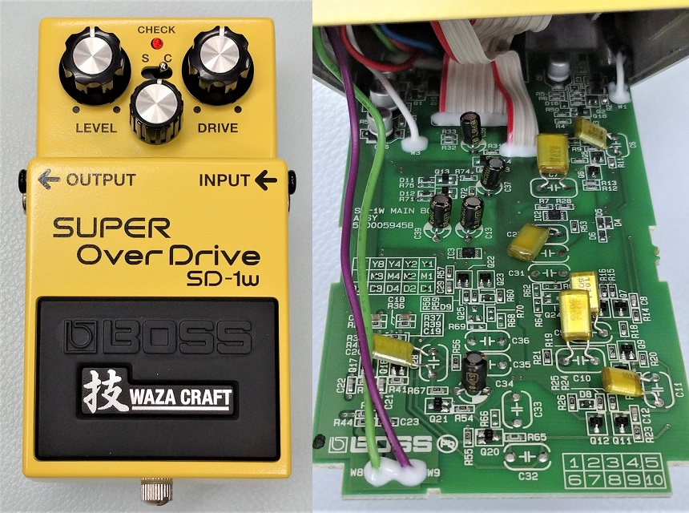
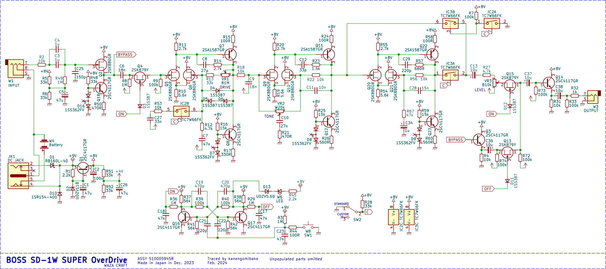
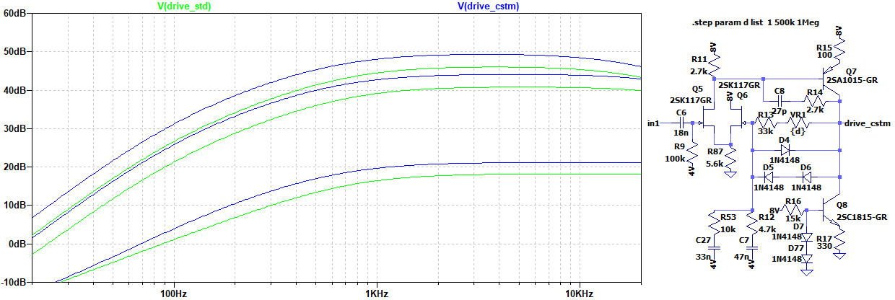
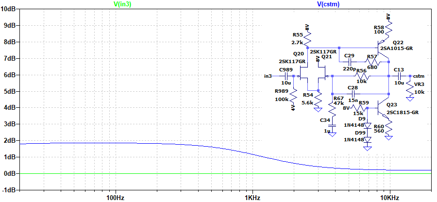
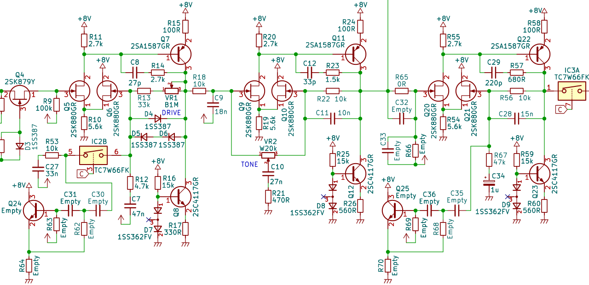

BOSS WAZA CRAFT SD-1W SUPER OverDrive 解析
2024年02月14日 カテゴリー：修理・改造・解析

BOSS BD-2Wに引き続き、SD-1Wを解析しました。KiCadデータ（基板画像入り）とLTspiceの回路図データはGitHubにあります。
▽回路図

BD-2Wでは、オペアンプの増幅となっている部分がディスクリート構成へと変わっていました。今回のSD-1Wでも同様の回路となっており、特に目新しい部分はないようです。オペアンプ2回路分の増幅に、カスタム・モードでもう一段増幅部が追加されています。
▽シミュレーション
- 初段増幅部（DRIVE 0% → 50% → 100%）

カスタム・モードでは増幅率が上がります。DRIVEが低い時以外は周波数特性の変化が少ないです。
- カスタム・モードで追加された増幅部

低音～中音域あたりが増幅されています。+2dB程度なので、あまりわかりやすい変化ではないかと思います。
【未実装の部品】
基板上には未実装の部品が多数あることが確認できます。KiCadファイルでは未実装の部品（Empty表記）も載せています。

ジャイレータ（シミュレーテッドインダクタ）等が構成されていて、周波数特性を変化させる検討をした様子をうかがい知ることができます。しかしながら結局は未実装になったということで、元のSD-1からそれほど離れない方がよいと判断されたのだろうと思います。